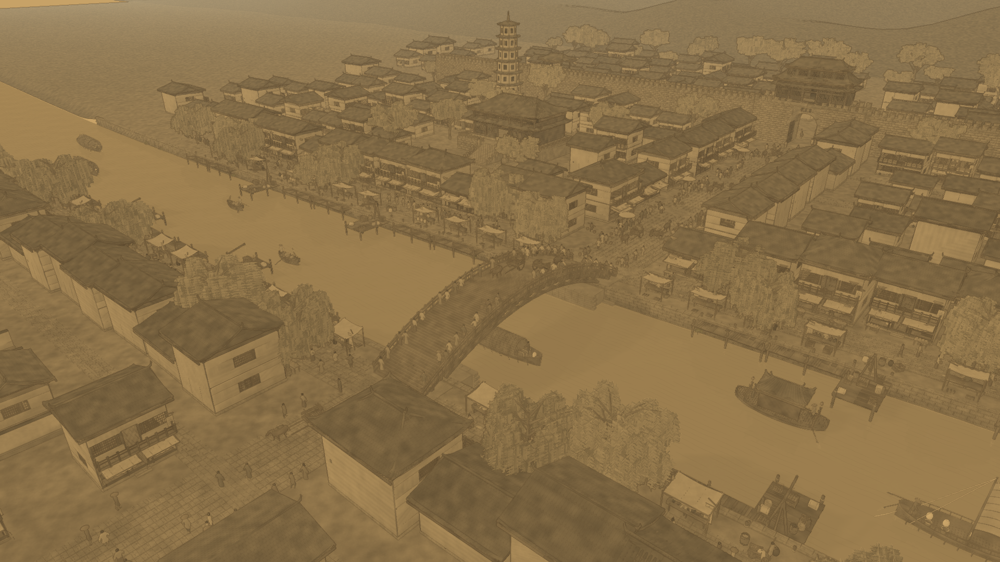
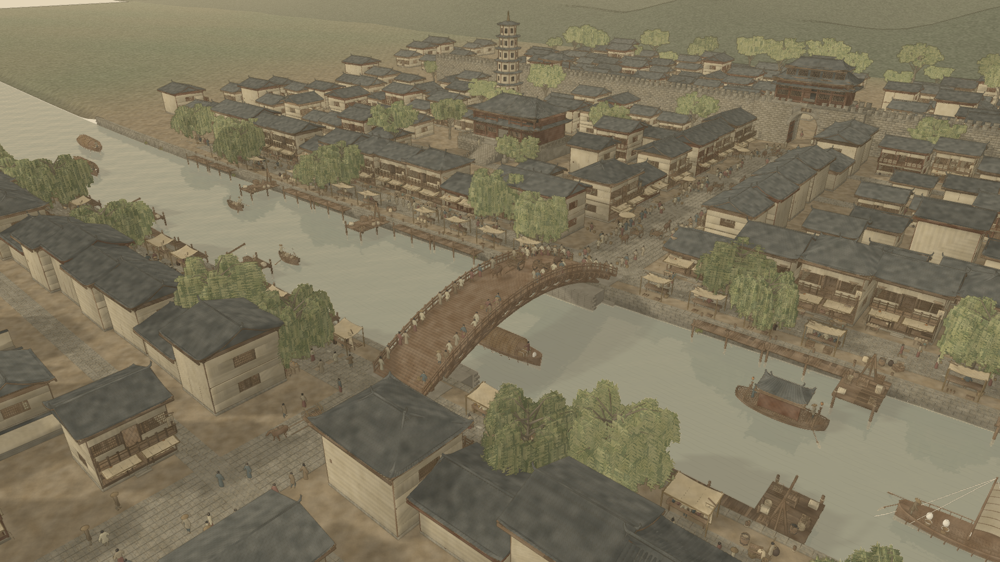
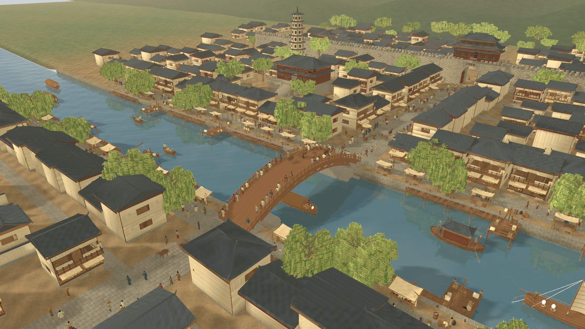
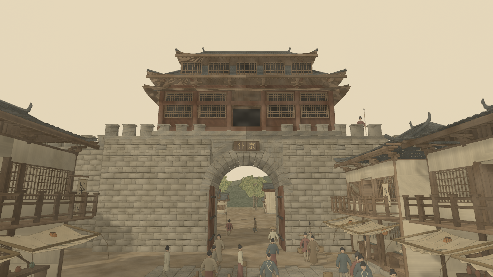

Structural and water-style repairs passed their functional checks. The 30 fps target and triangle budgets remain unmet. These captures and measurements are historical evidence from September 12–13, 2026.




Earlier screenshots, recordings and rollback archives remain on the original development Mac and are excluded from Git. Older reports may reference those local captures.